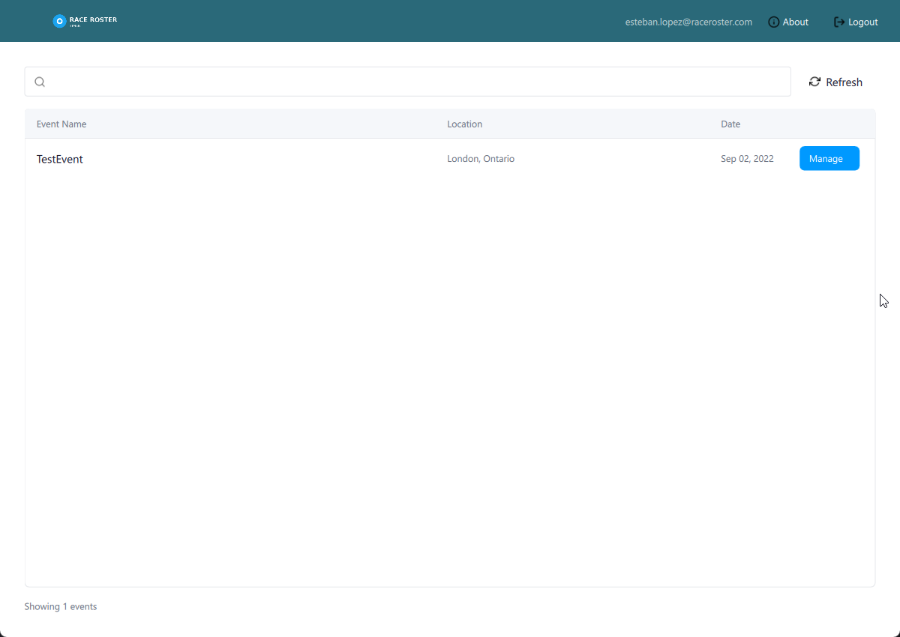
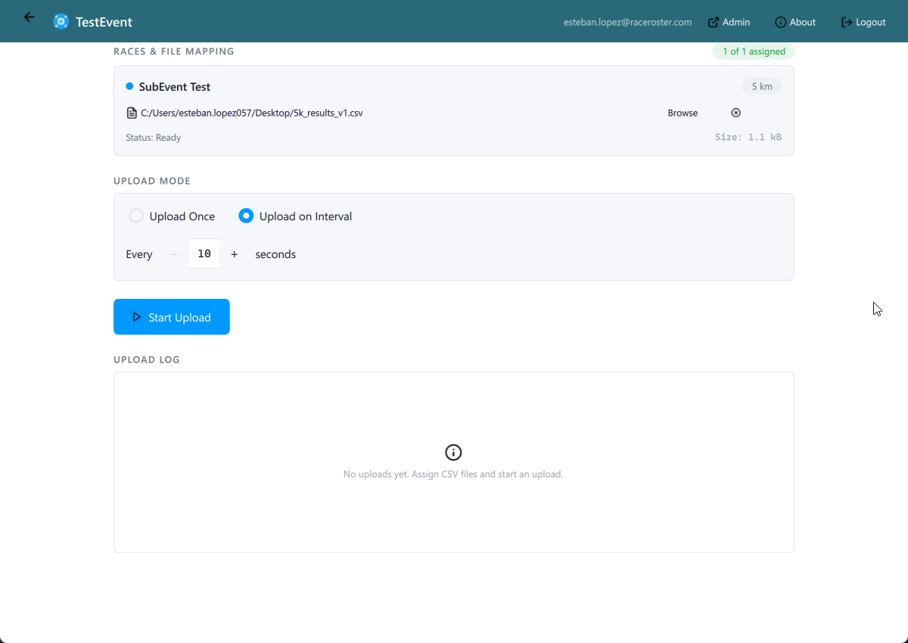
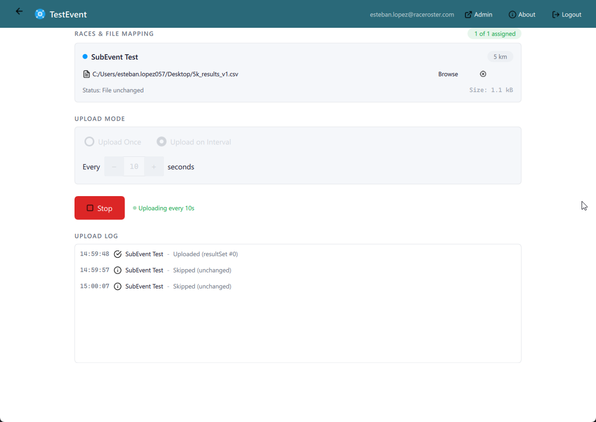
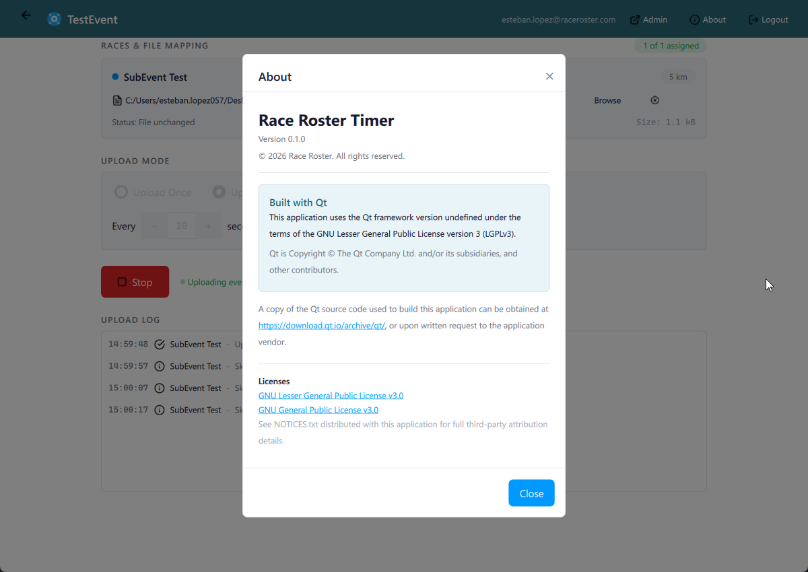

Race results, uploaded automatically.
Race Roster Timer bridges your timing system's CSV files to the Race Roster results platform. Set it up once, and results flow live as your race unfolds.
How It Works

Select Your Event
Log in with your Race Roster credentials and browse your events in a searchable list. Click "Manage" on the event you're timing today to get started.

Map Your CSV Files
For each race (5K, Half Marathon, etc.), browse and select the CSV file your timing system outputs. Choose "Upload Once" for final results, or "Upload on Interval" for live race-day updates.

Set It and Forget It
Hit Start and the app handles the rest. Results upload on a repeating interval, and every cycle is logged with timestamps and result set IDs. Smart skip detection saves bandwidth when the file hasn't changed.

Built for Race Day
Secure OAuth authentication with automatic token refresh. Persistent settings remember your file mappings across sessions. Built with Qt 6 for native performance on Windows, with macOS and Linux support planned.